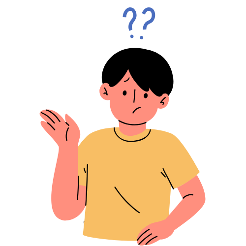

📌 Por que
Usamos "por que" (separado e sem acento) para fazer perguntas diretas ou indiretas.
- Por que você não veio à festa?
- Não sei por que ele saiu tão cedo.

📌 Por quê
Usamos "por quê" (separado e com acento) quando a expressão aparece no final da frase.
- Você não veio à reunião por quê?
📌 Porque
Usamos "porque" (junto e sem acento) para dar explicações ou justificar algo.
- Não fui à festa porque estava chovendo.
📌 Porquê
"Porquê" (junto e com acento) é um substantivo e significa "o motivo" ou "a razão".
- Desconheço o porquê de tanta confusão.
🎯 Teste seu conhecimento!
Agora que você aprendeu os diferentes usos dos "porquês", faça o quiz abaixo:
🧠 Fazer o Quiz